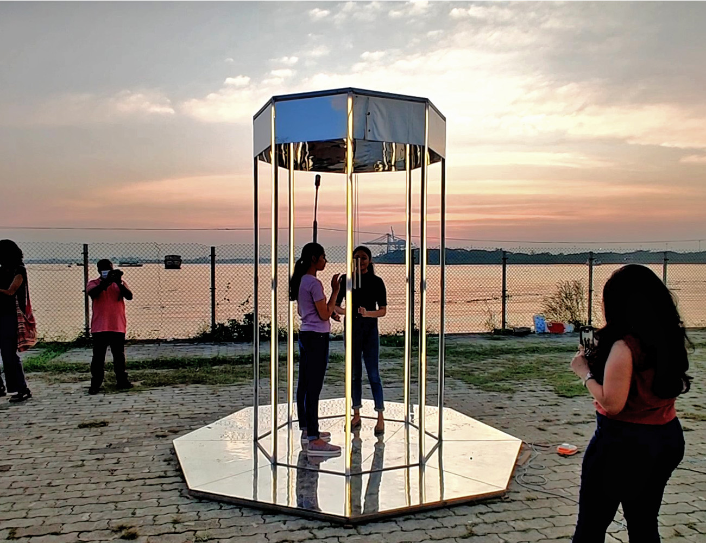

Emergent Loops
Sound / Interactive
Emergent Loops is a pavilion that was developed on the idea of the windchime sequencer. A gazebo-like structure with mirrors on the ceiling and the floor creates an infinitely reflecting plane. This structure is created as light as possible and consists of 8 slender steel channels for columns. At the center of this pavilion is a windchime. The oscillations of the windchime are used to convert data from the wind into digital signals. In additional to creating sounds, the windchime also triggers lights which run along the steel columns of the structure- creating an immersive visual and auditory experience for the viewer.
Gallery
Construction & Working
Emergent Loops
Sound / Interactive
Photographs / Video
Dennis Peter
Emergent Loops is a pavilion that was developed on the idea of the windchime sequencer. A gazebo-like structure with mirrors on the ceiling and the floor creates an infinitely reflecting plane. This structure is created as light as possible and consists of 8 slender steel channels for columns. At the center of this pavilion is a windchime. The oscillations of the windchime are used to convert data from the wind into digital signals. In additional to creating sounds, the windchime also triggers lights which run along the steel columns of the structure- creating an immersive visual and auditory experience for the viewer.
Each of the 8 chimes is mapped directly to trigger the lights that are fixed on the 8 steel columns of the pavilion. Thus triggering a sound on the chime also lights up the column that is positioned closest to the respective chime. The movement of the windchime in the wind also creates flashes of light. The users can also interact with the hanging windchimes to play them like an instrument as they wish. The installation exaggerates loops and patterns that are present in the natural world (using the data from the windchimes as an analogue) by processing them through algorithms and presenting them in a digital format.
Each of the 8 chimes is mapped directly to trigger the lights that are fixed on the 8 steel columns of the pavilion. Thus triggering a sound on the chime also lights up the column that is positioned closest to the respective chime. The movement of the windchime in the wind also creates flashes of light. The users can also interact with the hanging windchimes to play them like an instrument as they wish. The installation exaggerates loops and patterns that are present in the natural world (using the data from the windchimes as an analogue) by processing them through algorithms and presenting them in a digital format.
Additional Credits:
Asif Junaid, Rizwan Ahamed
Asif Junaid, Rizwan Ahamed